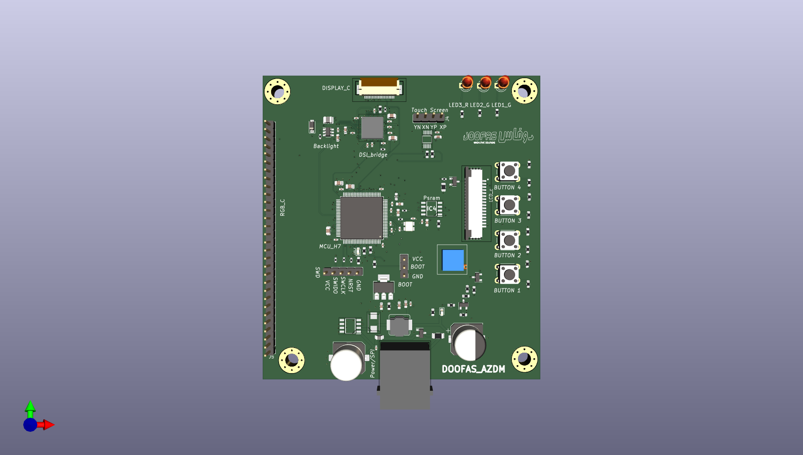

Projects – Abderrezak Mouacher
Electronics and Embedded Systems Engineer
📧 mouacherabderrezak@gmail.com
🌍 LinkedIn Profile
Soft Starter with RS485 Communication
Description: Designed and developed a soft starter system for AC induction motors. It uses thyristor-based control to reduce inrush current and is managed by an STM32 microcontroller. It includes a UI, protections, and meets EMC standards.
- Power stage: Opto-isolated triggering of SCRs with snubber protection
- Control board: STM32, analog signal conditioning, relay outputs
- User interface: LCD display with menu navigation
- Protections: Overvoltage, overcurrent, thermal shutdown
Technologies Used: RS485, Motor Control, STM32, KiCad, Embedded C
I/O Device with Modbus TCP/IP and 2PPoE
Description: I/O device reads I²C sensor data and transmits it over Modbus TCP/IP. Supports ring topology, 4PPoE, and EMC-compliant PCB design.
- Ring topology & 4PPoE
- 4-layer PCB, EMC compliant
- Compact & industrial-grade
Technologies Used: Modbus TCP/IP, Ethernet, 2PPoE, STM32
Images:


RTD8 – 8-Channel RTD I/O Module
Description: Developed an STM32-based module for 8-channel RTD (PT100) temperature sensing. Features alarm, fan control, and RS485 connectivity.
- 8 RTD channels with protection
- Alarm, trip, fan control, fault detection
- RS485 for industrial integration
Technologies Used: RS485, RTD, STM32
Multi-Display HMI Device with Touchscreen
Description: Versatile HMI card supporting LCD, MIPI DPI, MIPI DSI, with capacitive touchscreen and adaptable architecture.
- Supports LCD, MIPI DPI/DSI
- Touchscreen interface
- Designed for industrial usability
Technologies Used: STM32, HMI, Touchscreen, KiCad

📹 Watch Demo
STM32H7B0VBT6 Development Board Design
Description: Custom board for STM32H7B0VBT6, supporting high-speed I/O, LTDC for displays, QSPI PSRAM, and wireless communication.
- 64 GPIOs, LTDC, touchscreen
- 64MB PSRAM via QSPI
- Wi-Fi, Bluetooth, USB-C
- Boost converter up to 35V
Technologies Used: STM32H7B0VBT6, QSPI, LTDC, Wireless
Drone Prototype Project
Context: University Project – June 2021
Description: Designed and built a functional drone prototype as a student project. Focused on real-time control, flight stability, and basic obstacle avoidance using embedded systems principles.
- Designed frame and electronics layout
- Programmed flight controller and stabilization algorithms
- Integrated wireless control and sensors
Technologies Used: Microcontrollers, IMU Sensors, Wireless Communication, Embedded C